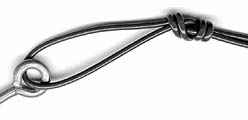
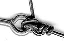
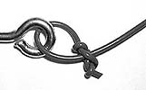
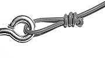

Time to Tie!

- Slide the end of the tippet (thinner line attached at the end of the leader) through the eyelet hole at the head of the fly.
- Wrap the short end of the line around the tippet 4-5 times
- Bring the shorter, wrapped end of the line back down to the hole created by the wrapping, in front of the eyelet and push the end of the line through
- Pull the end of the line tight. The wrapped area on the line above should compact down and create a tight bundle above the eyelet of the fly
*Remember: There are many ways to tie on a fly, but this method seems to do the trick
Other popular Fly Fishing Knots
| Surgeons Knot |  |
|---|---|
| Trilene Knot |  |
| Orvis Knot |  |
| Duncan Knot |  |